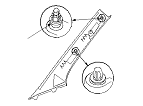
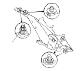

Sostituzione/ispezione componenti SRS dopo attivazione
|
NOTA: Prima di procedere a qualsiasi riparazione del sistema SRS, controllare i DTC attivando il metodo menu SRS del tester HDS; fare riferimento all'indice della ricerca guasti in base ai DTC per informazioni relative alle parti attivate meno ovvie (pretensionatori delle cinture di sicurezza, sensori di impatto frontale, sensori degli airbag laterali, ecc.)
In caso di urto con attivazione dei pretensionatori delle cinture di sicurezza, sostituire i seguenti elementi:
In caso di urto con attivazione del pretensionatore della fibbia della cintura di sicurezza laterale destra, sostituire quanto segue:
In caso di urto con attivazione degli airbag frontali, sostituire i seguenti elementi:
In caso di urto con attivazione degli airbag laterali, sostituire i seguenti elementi:
In caso di urto con attivazione degli airbag laterali a tendina, sostituire i seguenti elementi:
In caso di urto laterale o posteriore da moderato a intenso, controllare se l'airbag laterale a tendina o gli altri componenti correlati sono danneggiati. In funzione del grado di danneggiamento, sostituire i componenti in base alla necessità.
Durante la riparazione, controllare quanto segue:
Dopo aver completamente riparato la vettura, portare il commutatore di accensione su ON (II). Se la spia del sistema SRS si accende per circa 6 secondi e poi si spegne, significa che il sistema SRS funziona correttamente. Se la spia non funziona in modo adeguato, leggere il DTC attivando il metodo menu SRS del tester HDS. Se non si riesce ancora a richiamare i codici, passare alla ricerca guasti del circuito della spia del sistema SRS.
|
Finitura montante anteriore

Finitura montante centrale

Finitura montante posteriore
 |
|
|

|
|

|